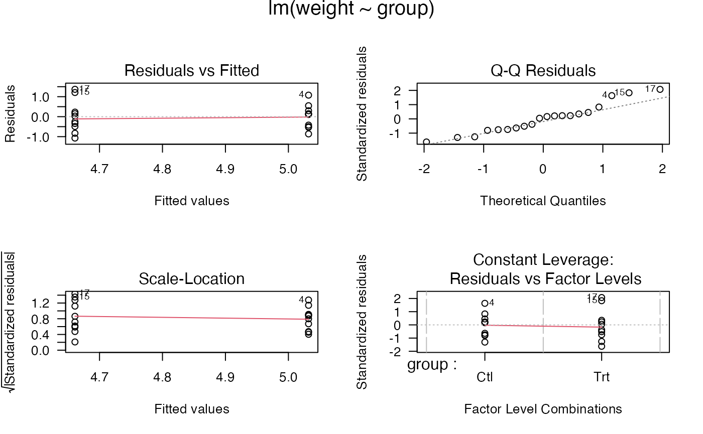

Introduction to R
lecture_introR.RmdOverall Note
- You can learn R.
- You will get frustrated.
- You will get errors that don’t help or make sense.
- Google is your friend.
- Try Googling the specific error message first.
- Then try googling your specific function and the error.
- Try a bunch of different search terms.
Helpful Websites
- Quick-R: www.statmethods.net
- R documentation: www.rdocumentation.org
- Swirl: www.swirlstats.com
- Stack Overflow: www.stackoverflow.com
- Learn Statistics with R: https://learningstatisticswithr.com/
Download Requirements
- Get R: http://cran.r-project.org/
- Mac: XQuartz https://www.xquartz.org/ (if you find you do not have it)
- RStudio: http://www.rstudio.org/
Commands
- Commands are the code that you tell R to do for you.
- They can be very simple or complex.
- Computers do what you tell them to do. Mistakes happen!
- Maybe it’s a typo, maybe it’s a misunderstanding of what the code does
Commands
- You can type a command directly into the console
- You can type in a document (Script or Markdown) and tell it to then run in the console
X <- 4Commands
-
>indicates the console is ready for more code -
+indicates that you haven’t finished a code block - Capitalization and symbols matter
-
=and<-are equivalent - Hit the up arrow – you can scroll through the last commands that were run
- Hit the tab key – you’ll get a list of variable names and options to select from
- Use the
?followed by a command to learn more about it
Commands
- Let’s take a look and run some simple commands
- Where is the console
- How do I move them around?
- How do I run code?
- What is a Script?
- What is Markdown?
- How do I run code in those?
RStudio
- What are all the windows in RStudio?
- Working Area:
- Current files that are open like scripts, markdown, etc.
- Console, Terminal, Jobs
- Where the magic happens
- Where everything runs
- Environment, History, …others
- Tells you what is saved in your working environment
- What variables and types of variables you have made
- Allows you to click to view them
- Files, Plots, Packages, Help, Viewer
- Shows you a file viewer, pictures/plots, packages, and help!
Object Types
- Here are some of the basics:
- Vectors
- Lists
- Matrices
- Data Frames
- Within those objects, values can be:
- Character
- Factor (a special type of character)
- Numeric/Integer/Complex
- Logical (True, False)
- NaN (versus NA)
- Last, objects can have attributes (names)
Objects Example
library(palmerpenguins)
data(penguins)
attributes(penguins)
#> $class
#> [1] "tbl_df" "tbl" "data.frame"
#>
#> $row.names
#> [1] 1 2 3 4 5 6 7 8 9 10 11 12 13 14 15 16 17 18
#> [19] 19 20 21 22 23 24 25 26 27 28 29 30 31 32 33 34 35 36
#> [37] 37 38 39 40 41 42 43 44 45 46 47 48 49 50 51 52 53 54
#> [55] 55 56 57 58 59 60 61 62 63 64 65 66 67 68 69 70 71 72
#> [73] 73 74 75 76 77 78 79 80 81 82 83 84 85 86 87 88 89 90
#> [91] 91 92 93 94 95 96 97 98 99 100 101 102 103 104 105 106 107 108
#> [109] 109 110 111 112 113 114 115 116 117 118 119 120 121 122 123 124 125 126
#> [127] 127 128 129 130 131 132 133 134 135 136 137 138 139 140 141 142 143 144
#> [145] 145 146 147 148 149 150 151 152 153 154 155 156 157 158 159 160 161 162
#> [163] 163 164 165 166 167 168 169 170 171 172 173 174 175 176 177 178 179 180
#> [181] 181 182 183 184 185 186 187 188 189 190 191 192 193 194 195 196 197 198
#> [199] 199 200 201 202 203 204 205 206 207 208 209 210 211 212 213 214 215 216
#> [217] 217 218 219 220 221 222 223 224 225 226 227 228 229 230 231 232 233 234
#> [235] 235 236 237 238 239 240 241 242 243 244 245 246 247 248 249 250 251 252
#> [253] 253 254 255 256 257 258 259 260 261 262 263 264 265 266 267 268 269 270
#> [271] 271 272 273 274 275 276 277 278 279 280 281 282 283 284 285 286 287 288
#> [289] 289 290 291 292 293 294 295 296 297 298 299 300 301 302 303 304 305 306
#> [307] 307 308 309 310 311 312 313 314 315 316 317 318 319 320 321 322 323 324
#> [325] 325 326 327 328 329 330 331 332 333 334 335 336 337 338 339 340 341 342
#> [343] 343 344
#>
#> $names
#> [1] "species" "island" "bill_length_mm"
#> [4] "bill_depth_mm" "flipper_length_mm" "body_mass_g"
#> [7] "sex" "year"Objects Example
str(penguins)
#> tibble [344 × 8] (S3: tbl_df/tbl/data.frame)
#> $ species : Factor w/ 3 levels "Adelie","Chinstrap",..: 1 1 1 1 1 1 1 1 1 1 ...
#> $ island : Factor w/ 3 levels "Biscoe","Dream",..: 3 3 3 3 3 3 3 3 3 3 ...
#> $ bill_length_mm : num [1:344] 39.1 39.5 40.3 NA 36.7 39.3 38.9 39.2 34.1 42 ...
#> $ bill_depth_mm : num [1:344] 18.7 17.4 18 NA 19.3 20.6 17.8 19.6 18.1 20.2 ...
#> $ flipper_length_mm: int [1:344] 181 186 195 NA 193 190 181 195 193 190 ...
#> $ body_mass_g : int [1:344] 3750 3800 3250 NA 3450 3650 3625 4675 3475 4250 ...
#> $ sex : Factor w/ 2 levels "female","male": 2 1 1 NA 1 2 1 2 NA NA ...
#> $ year : int [1:344] 2007 2007 2007 2007 2007 2007 2007 2007 2007 2007 ...
names(penguins) #ls(penguins) provides this as well
#> [1] "species" "island" "bill_length_mm"
#> [4] "bill_depth_mm" "flipper_length_mm" "body_mass_g"
#> [7] "sex" "year"Vectors
- You can think about a vector as one row or column of data
- All the objects must be the same class
- If you try to mix and match, it will coerce them into the same type
or make them
NAif not.
X
#> [1] 4-
[1]indicates the number of the first item for each printed row
penguins$species
#> [1] Adelie Adelie Adelie Adelie Adelie Adelie Adelie
#> [8] Adelie Adelie Adelie Adelie Adelie Adelie Adelie
#> [15] Adelie Adelie Adelie Adelie Adelie Adelie Adelie
#> [22] Adelie Adelie Adelie Adelie Adelie Adelie Adelie
#> [29] Adelie Adelie Adelie Adelie Adelie Adelie Adelie
#> [36] Adelie Adelie Adelie Adelie Adelie Adelie Adelie
#> [43] Adelie Adelie Adelie Adelie Adelie Adelie Adelie
#> [50] Adelie Adelie Adelie Adelie Adelie Adelie Adelie
#> [57] Adelie Adelie Adelie Adelie Adelie Adelie Adelie
#> [64] Adelie Adelie Adelie Adelie Adelie Adelie Adelie
#> [71] Adelie Adelie Adelie Adelie Adelie Adelie Adelie
#> [78] Adelie Adelie Adelie Adelie Adelie Adelie Adelie
#> [85] Adelie Adelie Adelie Adelie Adelie Adelie Adelie
#> [92] Adelie Adelie Adelie Adelie Adelie Adelie Adelie
#> [99] Adelie Adelie Adelie Adelie Adelie Adelie Adelie
#> [106] Adelie Adelie Adelie Adelie Adelie Adelie Adelie
#> [113] Adelie Adelie Adelie Adelie Adelie Adelie Adelie
#> [120] Adelie Adelie Adelie Adelie Adelie Adelie Adelie
#> [127] Adelie Adelie Adelie Adelie Adelie Adelie Adelie
#> [134] Adelie Adelie Adelie Adelie Adelie Adelie Adelie
#> [141] Adelie Adelie Adelie Adelie Adelie Adelie Adelie
#> [148] Adelie Adelie Adelie Adelie Adelie Gentoo Gentoo
#> [155] Gentoo Gentoo Gentoo Gentoo Gentoo Gentoo Gentoo
#> [162] Gentoo Gentoo Gentoo Gentoo Gentoo Gentoo Gentoo
#> [169] Gentoo Gentoo Gentoo Gentoo Gentoo Gentoo Gentoo
#> [176] Gentoo Gentoo Gentoo Gentoo Gentoo Gentoo Gentoo
#> [183] Gentoo Gentoo Gentoo Gentoo Gentoo Gentoo Gentoo
#> [190] Gentoo Gentoo Gentoo Gentoo Gentoo Gentoo Gentoo
#> [197] Gentoo Gentoo Gentoo Gentoo Gentoo Gentoo Gentoo
#> [204] Gentoo Gentoo Gentoo Gentoo Gentoo Gentoo Gentoo
#> [211] Gentoo Gentoo Gentoo Gentoo Gentoo Gentoo Gentoo
#> [218] Gentoo Gentoo Gentoo Gentoo Gentoo Gentoo Gentoo
#> [225] Gentoo Gentoo Gentoo Gentoo Gentoo Gentoo Gentoo
#> [232] Gentoo Gentoo Gentoo Gentoo Gentoo Gentoo Gentoo
#> [239] Gentoo Gentoo Gentoo Gentoo Gentoo Gentoo Gentoo
#> [246] Gentoo Gentoo Gentoo Gentoo Gentoo Gentoo Gentoo
#> [253] Gentoo Gentoo Gentoo Gentoo Gentoo Gentoo Gentoo
#> [260] Gentoo Gentoo Gentoo Gentoo Gentoo Gentoo Gentoo
#> [267] Gentoo Gentoo Gentoo Gentoo Gentoo Gentoo Gentoo
#> [274] Gentoo Gentoo Gentoo Chinstrap Chinstrap Chinstrap Chinstrap
#> [281] Chinstrap Chinstrap Chinstrap Chinstrap Chinstrap Chinstrap Chinstrap
#> [288] Chinstrap Chinstrap Chinstrap Chinstrap Chinstrap Chinstrap Chinstrap
#> [295] Chinstrap Chinstrap Chinstrap Chinstrap Chinstrap Chinstrap Chinstrap
#> [302] Chinstrap Chinstrap Chinstrap Chinstrap Chinstrap Chinstrap Chinstrap
#> [309] Chinstrap Chinstrap Chinstrap Chinstrap Chinstrap Chinstrap Chinstrap
#> [316] Chinstrap Chinstrap Chinstrap Chinstrap Chinstrap Chinstrap Chinstrap
#> [323] Chinstrap Chinstrap Chinstrap Chinstrap Chinstrap Chinstrap Chinstrap
#> [330] Chinstrap Chinstrap Chinstrap Chinstrap Chinstrap Chinstrap Chinstrap
#> [337] Chinstrap Chinstrap Chinstrap Chinstrap Chinstrap Chinstrap Chinstrap
#> [344] Chinstrap
#> Levels: Adelie Chinstrap GentooVector Examples
A <- 1:20
A
#> [1] 1 2 3 4 5 6 7 8 9 10 11 12 13 14 15 16 17 18 19 20
B <- seq(from = 1, to = 20, by = 1)
B
#> [1] 1 2 3 4 5 6 7 8 9 10 11 12 13 14 15 16 17 18 19 20
C <- c("cheese", "is", "great")
C
#> [1] "cheese" "is" "great"
D <- rep(1, times = 30)
D
#> [1] 1 1 1 1 1 1 1 1 1 1 1 1 1 1 1 1 1 1 1 1 1 1 1 1 1 1 1 1 1 1Lists
- While vectors are one row of data, we might want to have multiple rows or types
- With a vector, it is key to understand they have to be all the same type
- Lists are a grouping of variables that can be multiple types (between list items) and can be different lengths
- Often function output is saved as a list for this reason
- They usually have names to help you print out just a small part of the list
output <- lm(flipper_length_mm ~ bill_length_mm, data = penguins)
str(output)
#> List of 13
#> $ coefficients : Named num [1:2] 126.68 1.69
#> ..- attr(*, "names")= chr [1:2] "(Intercept)" "bill_length_mm"
#> $ residuals : Named num [1:342] -11.766 -7.442 0.206 4.29 -3.104 ...
#> ..- attr(*, "names")= chr [1:342] "1" "2" "3" "5" ...
#> $ effects : Named num [1:342] -3715.57 170.39 1.03 5.35 -2.22 ...
#> ..- attr(*, "names")= chr [1:342] "(Intercept)" "bill_length_mm" "" "" ...
#> $ rank : int 2
#> $ fitted.values: Named num [1:342] 193 193 195 189 193 ...
#> ..- attr(*, "names")= chr [1:342] "1" "2" "3" "5" ...
#> $ assign : int [1:2] 0 1
#> $ qr :List of 5
#> ..$ qr : num [1:342, 1:2] -18.4932 0.0541 0.0541 0.0541 0.0541 ...
#> .. ..- attr(*, "dimnames")=List of 2
#> .. .. ..$ : chr [1:342] "1" "2" "3" "5" ...
#> .. .. ..$ : chr [1:2] "(Intercept)" "bill_length_mm"
#> .. ..- attr(*, "assign")= int [1:2] 0 1
#> ..$ qraux: num [1:2] 1.05 1.04
#> ..$ pivot: int [1:2] 1 2
#> ..$ tol : num 1e-07
#> ..$ rank : int 2
#> ..- attr(*, "class")= chr "qr"
#> $ df.residual : int 340
#> $ na.action : 'omit' Named int [1:2] 4 272
#> ..- attr(*, "names")= chr [1:2] "4" "272"
#> $ xlevels : Named list()
#> $ call : language lm(formula = flipper_length_mm ~ bill_length_mm, data = penguins)
#> $ terms :Classes 'terms', 'formula' language flipper_length_mm ~ bill_length_mm
#> .. ..- attr(*, "variables")= language list(flipper_length_mm, bill_length_mm)
#> .. ..- attr(*, "factors")= int [1:2, 1] 0 1
#> .. .. ..- attr(*, "dimnames")=List of 2
#> .. .. .. ..$ : chr [1:2] "flipper_length_mm" "bill_length_mm"
#> .. .. .. ..$ : chr "bill_length_mm"
#> .. ..- attr(*, "term.labels")= chr "bill_length_mm"
#> .. ..- attr(*, "order")= int 1
#> .. ..- attr(*, "intercept")= int 1
#> .. ..- attr(*, "response")= int 1
#> .. ..- attr(*, ".Environment")=<environment: R_GlobalEnv>
#> .. ..- attr(*, "predvars")= language list(flipper_length_mm, bill_length_mm)
#> .. ..- attr(*, "dataClasses")= Named chr [1:2] "numeric" "numeric"
#> .. .. ..- attr(*, "names")= chr [1:2] "flipper_length_mm" "bill_length_mm"
#> $ model :'data.frame': 342 obs. of 2 variables:
#> ..$ flipper_length_mm: int [1:342] 181 186 195 193 190 181 195 193 190 186 ...
#> ..$ bill_length_mm : num [1:342] 39.1 39.5 40.3 36.7 39.3 38.9 39.2 34.1 42 37.8 ...
#> ..- attr(*, "terms")=Classes 'terms', 'formula' language flipper_length_mm ~ bill_length_mm
#> .. .. ..- attr(*, "variables")= language list(flipper_length_mm, bill_length_mm)
#> .. .. ..- attr(*, "factors")= int [1:2, 1] 0 1
#> .. .. .. ..- attr(*, "dimnames")=List of 2
#> .. .. .. .. ..$ : chr [1:2] "flipper_length_mm" "bill_length_mm"
#> .. .. .. .. ..$ : chr "bill_length_mm"
#> .. .. ..- attr(*, "term.labels")= chr "bill_length_mm"
#> .. .. ..- attr(*, "order")= int 1
#> .. .. ..- attr(*, "intercept")= int 1
#> .. .. ..- attr(*, "response")= int 1
#> .. .. ..- attr(*, ".Environment")=<environment: R_GlobalEnv>
#> .. .. ..- attr(*, "predvars")= language list(flipper_length_mm, bill_length_mm)
#> .. .. ..- attr(*, "dataClasses")= Named chr [1:2] "numeric" "numeric"
#> .. .. .. ..- attr(*, "names")= chr [1:2] "flipper_length_mm" "bill_length_mm"
#> ..- attr(*, "na.action")= 'omit' Named int [1:2] 4 272
#> .. ..- attr(*, "names")= chr [1:2] "4" "272"
#> - attr(*, "class")= chr "lm"
output$coefficients
#> (Intercept) bill_length_mm
#> 126.684427 1.690062Dimensional Data
- Matrices
- Matrices are vectors with dimensions (like a 2X3)
- All the data must be the same type
- Data Frames / Tibbles
- Like a matrix, but the columns can be different types of classes
Matrix
- Let’s talk about the
[ , ] -
[row, column]to subset or grab specific values
myMatrix <- matrix(data = 1:10,
nrow = 5,
ncol = 2)
myMatrix
#> [,1] [,2]
#> [1,] 1 6
#> [2,] 2 7
#> [3,] 3 8
#> [4,] 4 9
#> [5,] 5 10Data Frames
- With data frames, we can use
[ , ] - However, they also have attributes that allow us to use the
$(lists have this too!)
penguins[1, 2:3]
#> # A tibble: 1 × 2
#> island bill_length_mm
#> <fct> <dbl>
#> 1 Torgersen 39.1
penguins$sex[4:25] #why no comma?
#> [1] <NA> female male female male <NA> <NA> <NA> <NA> female
#> [11] male male female female male female male female male female
#> [21] male male
#> Levels: female maleRemind R Where Things Are
- Just because you know we have
penguinsopen and there’s a variable in in calledspecies… you cannot just usespecies
Converting Object Types
- You can use
as.functions to convert between types - Show as.
to see what is available - Be careful though!
newDF <- as.data.frame(cbind(X,Y))
str(newDF)
#> 'data.frame': 5 obs. of 2 variables:
#> $ X: int 1 2 3 4 5
#> $ Y: int 6 7 8 9 10
as.numeric(c("one", "two", "3"))
#> Warning: NAs introduced by coercion
#> [1] NA NA 3Subsetting
- Subsetting is parceling out the rows/columns that you need given some criteria.
- We already talked about how to select one row/column with
[1,]or[,1]and the$operator. - What about cases you want to select based on scores, missing data, etc.?
Subsetting Examples
- How does the logical operator work?
- It analyzes each row/column for the appropriate logical question
- We are asking when bill length is greater than 54
- We only got back the rows that the length was greater than 54
- Careful where you put it (before the
,)
penguins[1:2,] #just the first two rows
#> # A tibble: 2 × 8
#> species island bill_length_mm bill_depth_mm flipper_length_mm body_mass_g
#> <fct> <fct> <dbl> <dbl> <int> <int>
#> 1 Adelie Torgersen 39.1 18.7 181 3750
#> 2 Adelie Torgersen 39.5 17.4 186 3800
#> # ℹ 2 more variables: sex <fct>, year <int>
penguins[penguins$bill_length_mm > 54 , ] #how does this work?
#> # A tibble: 9 × 8
#> species island bill_length_mm bill_depth_mm flipper_length_mm body_mass_g
#> <fct> <fct> <dbl> <dbl> <int> <int>
#> 1 NA NA NA NA NA NA
#> 2 Gentoo Biscoe 59.6 17 230 6050
#> 3 Gentoo Biscoe 54.3 15.7 231 5650
#> 4 Gentoo Biscoe 55.9 17 228 5600
#> 5 Gentoo Biscoe 55.1 16 230 5850
#> 6 NA NA NA NA NA NA
#> 7 Chinstrap Dream 58 17.8 181 3700
#> 8 Chinstrap Dream 54.2 20.8 201 4300
#> 9 Chinstrap Dream 55.8 19.8 207 4000
#> # ℹ 2 more variables: sex <fct>, year <int>
penguins$bill_length_mm > 54
#> [1] FALSE FALSE FALSE NA FALSE FALSE FALSE FALSE FALSE FALSE FALSE FALSE
#> [13] FALSE FALSE FALSE FALSE FALSE FALSE FALSE FALSE FALSE FALSE FALSE FALSE
#> [25] FALSE FALSE FALSE FALSE FALSE FALSE FALSE FALSE FALSE FALSE FALSE FALSE
#> [37] FALSE FALSE FALSE FALSE FALSE FALSE FALSE FALSE FALSE FALSE FALSE FALSE
#> [49] FALSE FALSE FALSE FALSE FALSE FALSE FALSE FALSE FALSE FALSE FALSE FALSE
#> [61] FALSE FALSE FALSE FALSE FALSE FALSE FALSE FALSE FALSE FALSE FALSE FALSE
#> [73] FALSE FALSE FALSE FALSE FALSE FALSE FALSE FALSE FALSE FALSE FALSE FALSE
#> [85] FALSE FALSE FALSE FALSE FALSE FALSE FALSE FALSE FALSE FALSE FALSE FALSE
#> [97] FALSE FALSE FALSE FALSE FALSE FALSE FALSE FALSE FALSE FALSE FALSE FALSE
#> [109] FALSE FALSE FALSE FALSE FALSE FALSE FALSE FALSE FALSE FALSE FALSE FALSE
#> [121] FALSE FALSE FALSE FALSE FALSE FALSE FALSE FALSE FALSE FALSE FALSE FALSE
#> [133] FALSE FALSE FALSE FALSE FALSE FALSE FALSE FALSE FALSE FALSE FALSE FALSE
#> [145] FALSE FALSE FALSE FALSE FALSE FALSE FALSE FALSE FALSE FALSE FALSE FALSE
#> [157] FALSE FALSE FALSE FALSE FALSE FALSE FALSE FALSE FALSE FALSE FALSE FALSE
#> [169] FALSE FALSE FALSE FALSE FALSE FALSE FALSE FALSE FALSE FALSE FALSE FALSE
#> [181] FALSE FALSE FALSE FALSE FALSE TRUE FALSE FALSE FALSE FALSE FALSE FALSE
#> [193] FALSE FALSE FALSE FALSE FALSE FALSE FALSE FALSE FALSE FALSE FALSE FALSE
#> [205] FALSE FALSE FALSE FALSE FALSE FALSE FALSE FALSE FALSE FALSE FALSE TRUE
#> [217] FALSE FALSE FALSE FALSE FALSE FALSE FALSE FALSE FALSE FALSE FALSE FALSE
#> [229] FALSE FALSE FALSE FALSE FALSE FALSE FALSE FALSE FALSE FALSE FALSE FALSE
#> [241] FALSE FALSE FALSE FALSE FALSE FALSE FALSE FALSE FALSE FALSE FALSE FALSE
#> [253] FALSE TRUE FALSE FALSE FALSE FALSE FALSE FALSE FALSE FALSE FALSE FALSE
#> [265] FALSE FALSE FALSE TRUE FALSE FALSE FALSE NA FALSE FALSE FALSE FALSE
#> [277] FALSE FALSE FALSE FALSE FALSE FALSE FALSE FALSE FALSE FALSE FALSE FALSE
#> [289] FALSE FALSE FALSE FALSE FALSE TRUE FALSE FALSE FALSE FALSE FALSE FALSE
#> [301] FALSE FALSE FALSE FALSE FALSE FALSE FALSE TRUE FALSE FALSE FALSE FALSE
#> [313] FALSE FALSE FALSE FALSE FALSE FALSE FALSE FALSE FALSE FALSE FALSE FALSE
#> [325] FALSE FALSE FALSE FALSE FALSE FALSE FALSE FALSE FALSE FALSE FALSE FALSE
#> [337] FALSE FALSE FALSE TRUE FALSE FALSE FALSE FALSESubsetting Examples
#you can create complex rules
penguins[penguins$bill_length_mm > 54 & penguins$bill_depth_mm > 17, ]
#> # A tibble: 5 × 8
#> species island bill_length_mm bill_depth_mm flipper_length_mm body_mass_g
#> <fct> <fct> <dbl> <dbl> <int> <int>
#> 1 NA NA NA NA NA NA
#> 2 NA NA NA NA NA NA
#> 3 Chinstrap Dream 58 17.8 181 3700
#> 4 Chinstrap Dream 54.2 20.8 201 4300
#> 5 Chinstrap Dream 55.8 19.8 207 4000
#> # ℹ 2 more variables: sex <fct>, year <int>
#you can do all BUT
penguins[ , -1]
#> # A tibble: 344 × 7
#> island bill_length_mm bill_depth_mm flipper_length_mm body_mass_g sex year
#> <fct> <dbl> <dbl> <int> <int> <fct> <int>
#> 1 Torge… 39.1 18.7 181 3750 male 2007
#> 2 Torge… 39.5 17.4 186 3800 fema… 2007
#> 3 Torge… 40.3 18 195 3250 fema… 2007
#> 4 Torge… NA NA NA NA NA 2007
#> 5 Torge… 36.7 19.3 193 3450 fema… 2007
#> 6 Torge… 39.3 20.6 190 3650 male 2007
#> 7 Torge… 38.9 17.8 181 3625 fema… 2007
#> 8 Torge… 39.2 19.6 195 4675 male 2007
#> 9 Torge… 34.1 18.1 193 3475 NA 2007
#> 10 Torge… 42 20.2 190 4250 NA 2007
#> # ℹ 334 more rows
#grab a few columns by name
vars <- c("bill_length_mm", "sex")
penguins[ , vars]
#> # A tibble: 344 × 2
#> bill_length_mm sex
#> <dbl> <fct>
#> 1 39.1 male
#> 2 39.5 female
#> 3 40.3 female
#> 4 NA NA
#> 5 36.7 female
#> 6 39.3 male
#> 7 38.9 female
#> 8 39.2 male
#> 9 34.1 NA
#> 10 42 NA
#> # ℹ 334 more rowsSubsetting
#another function
#notice any differences?
subset(penguins, bill_length_mm > 54)
#> # A tibble: 7 × 8
#> species island bill_length_mm bill_depth_mm flipper_length_mm body_mass_g
#> <fct> <fct> <dbl> <dbl> <int> <int>
#> 1 Gentoo Biscoe 59.6 17 230 6050
#> 2 Gentoo Biscoe 54.3 15.7 231 5650
#> 3 Gentoo Biscoe 55.9 17 228 5600
#> 4 Gentoo Biscoe 55.1 16 230 5850
#> 5 Chinstrap Dream 58 17.8 181 3700
#> 6 Chinstrap Dream 54.2 20.8 201 4300
#> 7 Chinstrap Dream 55.8 19.8 207 4000
#> # ℹ 2 more variables: sex <fct>, year <int>
#other functions include filter() in tidyverseMissing Values
- Missing values are marked with
NA -
NaNstands for not a number, which doesn’t automatically convert to missing - Most functions have an option for excluding the
NAvalues but they can be slightly different
head(complete.cases(penguins)) #creates logical
#> [1] TRUE TRUE TRUE FALSE TRUE TRUE
head(na.omit(penguins)) #creates actual rows
#> # A tibble: 6 × 8
#> species island bill_length_mm bill_depth_mm flipper_length_mm body_mass_g
#> <fct> <fct> <dbl> <dbl> <int> <int>
#> 1 Adelie Torgersen 39.1 18.7 181 3750
#> 2 Adelie Torgersen 39.5 17.4 186 3800
#> 3 Adelie Torgersen 40.3 18 195 3250
#> 4 Adelie Torgersen 36.7 19.3 193 3450
#> 5 Adelie Torgersen 39.3 20.6 190 3650
#> 6 Adelie Torgersen 38.9 17.8 181 3625
#> # ℹ 2 more variables: sex <fct>, year <int>
head(is.na(penguins$body_mass_g)) #for individual vectors
#> [1] FALSE FALSE FALSE TRUE FALSE FALSEWorking Directories
- Your computer has files and folders, and you have to tell R where to look
- The working directory is where you are currently telling it to look
getwd()
#> [1] "/Users/erinbuchanan/GitHub/Research/1.5_packages/learnSEM/vignettes"Working Directory
- You can set the working directory by doing something like this
- I would suggest this is pretty error prone and breaks when you move files!
setwd("/Users/buchanan/OneDrive - Harrisburg University/Teaching/ANLY 580/updated/1 Introduction R")Working Directory
- Working directories are critical because they allow you to automate
- Instead of using the point and click options, you can just run code to open your specific files
- Markdown files are the best!
- Projects are the best!
Importing Files
- There are many ways to import files
- You can use base R functions (
readLines,read.csv) - You can use tidyverse (
read_csv) - You can use Import Dataset clickable option
- Why not use one package that does most of it like magic?
- You can use base R functions (
library(rio)
myDF <- import("data/assignment_introR.csv")
head(myDF)
#> expno rating orginalcode id speed error whichhand LR_switch finger_switch rha
#> 1 1_2 8 faw 1 75 49 Left 0 2 -3
#> 2 1_2 5 resz 1 75 49 Left 0 3 -4
#> 3 1_2 4 saf 1 NA 49 Left 0 2 -3
#> 4 1_2 5 zers 1 75 49 Left 0 3 -4
#> 5 1_2 7 zet 1 75 49 Left 0 2 -3
#> 6 1_2 5 dafe 1 75 49 Left 0 3 -4
#> word_length letter_freq real_fake speed_c
#> 1 3 4.251667 1 15.17
#> 2 4 6.272500 1 15.17
#> 3 3 5.574000 1 15.17
#> 4 4 6.272500 1 15.17
#> 5 3 7.277333 1 15.17
#> 6 4 6.837500 1 15.17Packages
- You can install extra functions by installing packages or libraries
- These can be downloaded from CRAN using
install.packages()- You can also install these by using the Packages tab
- Additional packages can be installed from GitHub and other places
install.packages("car")Packages
- View what is installed with the Packages window
- Every time you get a major R update, you will likely have to reinstall packages
- Every time you restart R, you will need to reload each
package
- Helpful to put the library code right at the top of your scripts
Functions
- Functions are pre-written code to help you run analyses
- Get help with function, learn what the arguments should be:
- Let’s flip back to RStudio to see what this did
?lm
help(lm)Functions
args(lm)
#> function (formula, data, subset, weights, na.action, method = "qr",
#> model = TRUE, x = FALSE, y = FALSE, qr = TRUE, singular.ok = TRUE,
#> contrasts = NULL, offset, ...)
#> NULL
example(lm)
#>
#> lm> require(graphics)
#>
#> lm> ## Annette Dobson (1990) "An Introduction to Generalized Linear Models".
#> lm> ## Page 9: Plant Weight Data.
#> lm> ctl <- c(4.17,5.58,5.18,6.11,4.50,4.61,5.17,4.53,5.33,5.14)
#>
#> lm> trt <- c(4.81,4.17,4.41,3.59,5.87,3.83,6.03,4.89,4.32,4.69)
#>
#> lm> group <- gl(2, 10, 20, labels = c("Ctl","Trt"))
#>
#> lm> weight <- c(ctl, trt)
#>
#> lm> lm.D9 <- lm(weight ~ group)
#>
#> lm> lm.D90 <- lm(weight ~ group - 1) # omitting intercept
#>
#> lm> ## No test:
#> lm> ##D anova(lm.D9)
#> lm> ##D summary(lm.D90)
#> lm> ## End(No test)
#> lm> opar <- par(mfrow = c(2,2), oma = c(0, 0, 1.1, 0))
#>
#> lm> plot(lm.D9, las = 1) # Residuals, Fitted, ...
#>
#> lm> par(opar)
#>
#> lm> ## Don't show:
#> lm> ## model frame :
#> lm> stopifnot(identical(lm(weight ~ group, method = "model.frame"),
#> lm+ model.frame(lm.D9)))
#>
#> lm> ## End(Don't show)
#> lm> ### less simple examples in "See Also" above
#> lm>
#> lm>
#> lm>Define Your Own Function
- Name the function before
<- - Define the arguments inside
() - Define what the function does inside
{}
pizza <- function(x){ x^2 }
pizza(3)
#> [1] 9Examples Functions with Missing Data
mean(penguins$bill_length_mm) #returns NA
#> [1] NA
mean(penguins$bill_length_mm, na.rm = TRUE)
#> [1] 43.92193
cor(penguins[ , c("bill_length_mm", "bill_depth_mm", "flipper_length_mm")])
#> bill_length_mm bill_depth_mm flipper_length_mm
#> bill_length_mm 1 NA NA
#> bill_depth_mm NA 1 NA
#> flipper_length_mm NA NA 1
cor(penguins[ , c("bill_length_mm", "bill_depth_mm", "flipper_length_mm")],
use = "pairwise.complete.obs")
#> bill_length_mm bill_depth_mm flipper_length_mm
#> bill_length_mm 1.0000000 -0.2350529 0.6561813
#> bill_depth_mm -0.2350529 1.0000000 -0.5838512
#> flipper_length_mm 0.6561813 -0.5838512 1.0000000